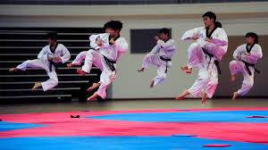
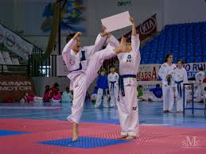

Taekwondo es un término que procede del coreano y que hace referencia a un arte marcial del mismo origen. ... La frase “tae kwon do”, por lo tanto, alude al uso de los pies y las manos en una técnica que, por extensión, no apela a ninguna clase de armamento.
| animal | imagen |
|---|---|
| panda |  |
| conejo | |
| ardilla |  |